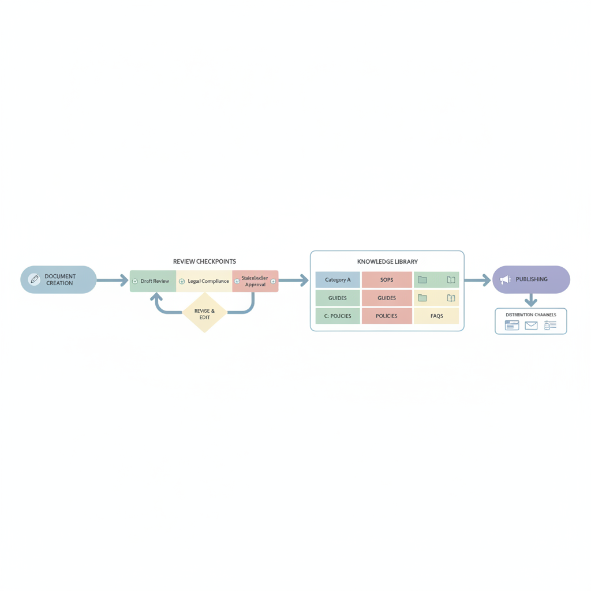

What Is Knowledge Base Software? A Complete Guide to Building and Managing One in 2026
When someone on your team spends forty minutes hunting through old email threads to answer a question that someone answered six months ago, you're watching time and money evaporate. That's the gap knowledge base software is designed to close.
This guide explains what knowledge base software actually is, why the demand for it has never been higher, and — most importantly — how to build and manage one that people will actually use.
What Is Knowledge Base Software?
Knowledge base software is a platform for creating, organizing, and publishing a structured library of information. It can serve your customers (an external knowledge base — think help centers, product manuals, FAQs) or your team (an internal knowledge base — onboarding docs, policies, runbooks, procedures).
Unlike a shared Google Drive folder or a pile of Word documents, knowledge base software gives that content a proper home: a searchable, versioned, navigable structure that readers can find their way around without someone holding their hand.
At its core, good knowledge base software does three things:
- Makes authoring easy — so the people who know things can actually document them without technical friction.
- Makes content findable — through search, category navigation, and clear structure.
- Keeps content alive — through maintenance workflows, version control, and review cycles.
External vs. Internal Knowledge Bases
External (customer-facing) knowledge bases include product documentation, help centers, user manuals, and tutorial libraries. They let customers resolve their own issues before reaching out to support.
The business case is clear: research shows that 69% of consumers try to resolve their issues independently before contacting support [Asana]. A well-built external knowledge base puts the answers they're looking for right where they'll look.
Internal knowledge bases capture company-specific knowledge: employee onboarding guides, IT runbooks, HR policies, SOPs, process documentation. The problem they solve is just as pressing — 47% of professionals report spending one to five hours every day searching for information they need to do their job [Cake].
Many organizations need both. The good news is that the same principles — and often the same platform — apply to both.
Why Knowledge Base Software Matters More in 2026
Three forces are making this category impossible to ignore right now.
Self-service is the default
78% of CRM leaders report that customers prefer self-service solutions [Cake]. That preference isn't going away — it's growing, and customers now expect to find answers in seconds, not minutes.
Teams are drowning in disconnected information
54% of organizations use more than five different platforms for documentation [Cake]. The result is knowledge scattered across email, chat, wikis, and shared drives — impossible to maintain, impossible to search, and impossible to trust.
AI needs structure to work
AI-powered tools — from chatbots to internal assistants — are only as good as the information they're trained on. If that information is disorganized, duplicated, or buried in PDFs, AI can't help. Organizations are discovering that investing in a clean, well-structured knowledge base is a prerequisite for getting value from any AI layer on top [Rezolve.ai].
How to Build a Knowledge Base: 5 Steps

Step 1: Define your audience and purpose
Before you write a single article, answer two questions: Who is this for? and What questions do they need answered?
An external knowledge base for a SaaS product has completely different needs from an internal HR policy library. Map out the top ten questions your audience asks most often. These become your first ten articles.
Step 2: Design a clear structure
Organize content around what your readers are trying to do, not around how your company is structured internally. A customer troubleshooting a login issue doesn't care which team owns the feature — they need "Account & Login" to be obvious in the navigation.
Keep your top-level categories to six or fewer. Sub-categories can go deeper, but the entry point needs to be simple. The most effective knowledge bases in 2026 are structured around user tasks, not internal departments [Rezolve.ai].
Step 3: Write for clarity, not completeness
Each article should answer one specific question. Resist the urge to pack everything into a single document — shorter, focused articles are easier to find, easier to maintain, and easier for AI systems to surface accurately.
Write in plain language. Short sentences. Active voice. If your audience is non-technical, test your articles with someone who isn't an expert in the subject. If they get confused, rewrite.
Use your long-tail keywords naturally as article titles and section headings — for example, "How to Create a Knowledge Base for Customer Support" is both a useful article title and a phrase your audience actually searches for.
Step 4: Choose the right platform
Your knowledge base software should match the way your authors already work. If your team drafts in Google Docs, a platform that integrates natively with Docs will see far higher adoption than one that requires learning a new editor. If your audience is global, machine translation support matters.
Look for:
- A clean authoring interface with no technical setup required
- Built-in search (full-text, ideally with relevance scoring)
- Custom domain support, so docs live on your brand
- Version history and approval workflows to maintain quality
- Mobile-responsive output, since a growing share of readers access documentation on mobile
Asana's guide to building a knowledge base recommends assigning clear ownership of content updates and building that into your team's workflow — not treating it as a one-time project.
Step 5: Publish, measure, and iterate
A knowledge base is not a destination — it's a process. Publish early, even if the content isn't exhaustive. Then watch where readers get stuck: search terms that return no results, articles with high exit rates, and feedback on individual topics all tell you what to write next.
Schedule quarterly reviews to check that content is still accurate. If your product changes or your policies update, your documentation should change with it. 62% of support agents say their help materials are frequently outdated [Cake] — that's the single most common reason knowledge bases fail.
Knowledge Base Management Best Practices
Building the knowledge base is step one. Keeping it useful is the real work.
Assign clear ownership. Every article should have a named owner responsible for keeping it accurate. Without ownership, content drifts toward obsolescence.
Use a review schedule. Monthly for high-traffic articles, quarterly for the rest. Version control means you can always roll back a change that introduced an error.
Measure what matters. Track search terms that return zero results (content gaps), articles with the most views (high value — protect these), and articles with the lowest helpfulness ratings (candidates for rewriting).
Write once, maintain always. The "write once, publish everywhere" promise of knowledge base software only holds if you invest in keeping the source material accurate. A single source of truth is only valuable if it's true.
Making Your Knowledge Base AI-Ready
This is where 2026 is different from five years ago. If you're investing in an AI assistant, chatbot, or AI search layer, your knowledge base is the foundation it runs on. Poorly structured content produces poor AI answers.
To prepare your knowledge base for AI:
- Break content into atomic pieces. One concept per article. One answer per section. AI retrieves chunks, not documents.
- Add metadata. Topic tags, audience labels, product areas. Metadata helps AI surface the right article for the right context.
- Eliminate duplicates and contradictions. Two articles that give different answers to the same question will produce inconsistent AI responses. Audit before you integrate.
- Convert PDFs and legacy files to structured content. AI struggles with scanned documents, image-heavy PDFs, and inconsistently formatted files. If it's in your knowledge base, it should be in a format that's machine-readable [Rezolve.ai].
Organizations that establish knowledge governance before deploying AI see significantly higher answer quality and lower hallucination rates.
Putting It All Together
Knowledge base software removes the barrier between the people who know things and the people who need to know them. Whether you're building an external help center to deflect support tickets, an internal wiki to accelerate onboarding, or a policy library to keep your team aligned — the fundamentals are the same: structure, clarity, ownership, and iteration.
The teams that get the most value from knowledge base software treat it as a living product, not a one-time documentation project. They assign ownership, build review cycles into their workflow, and use real data to decide what to write next.
If you're ready to start building, Sonat is designed specifically for this — a documentation platform that lets non-technical teams author in Google Docs, publish to a searchable, mobile-responsive knowledge base, and manage versions and approvals without any technical setup. The Free plan is permanent and requires no credit card.
Sources
- Asana. "4 Easy Steps for Creating an Effective Knowledge Base [2026]." asana.com/resources/knowledge-base
- Cake. "Knowledge Management Statistics and Trends in 2025." cake.com/blog/knowledge-management-statistics
- Kairntech. "Knowledge Management — Strategies, Tools & Best Practices for 2026." kairntech.com/blog/articles/knowledge-management
- Rezolve.ai. "Building an AI-Ready Knowledge Base: Best Practices for 2026." rezolve.ai/blog/building-an-ai-ready-knowledge-base-best-practices